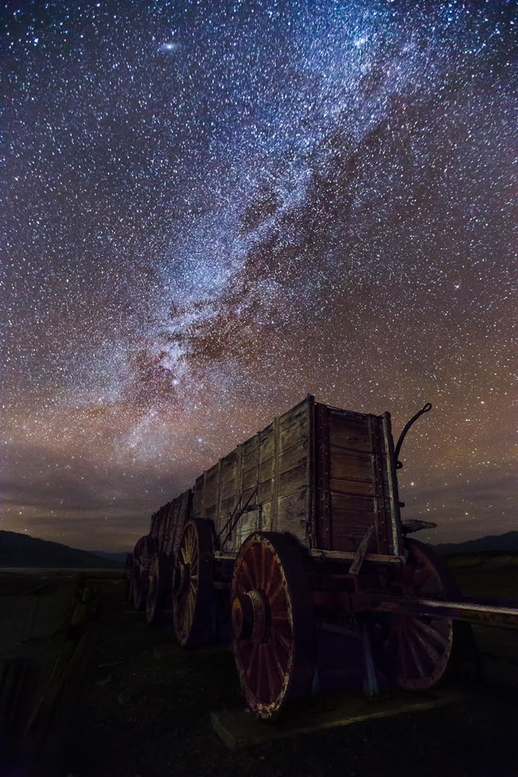
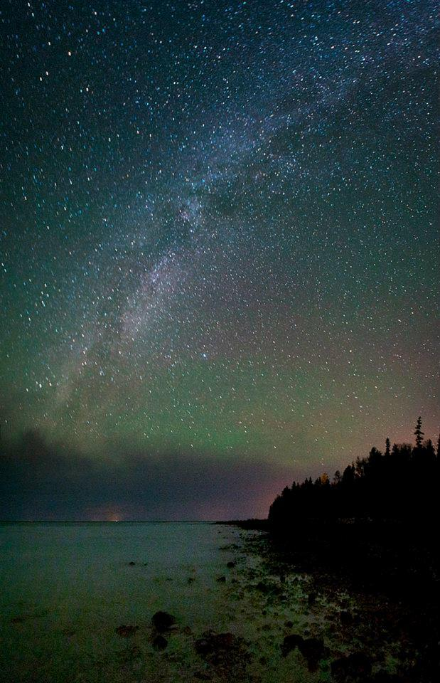
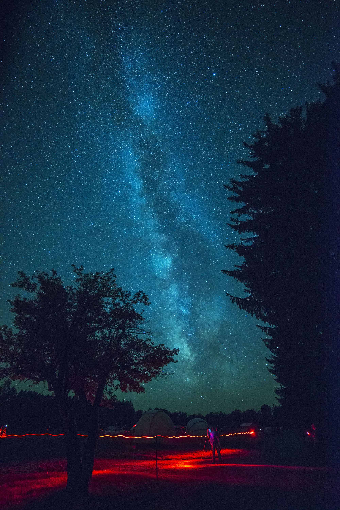

Continguous U.S.
-

Death Valley
California
Death Valley National Park harbors some of the darkest night skies in the United States. That dark sky is key to its certification as the third International Dark Sky Park in the U.S. National Park System.
-

The Headlands
Michigan
One of the first internationally recognized dark sky parks in the world. With more than 500 acres of woodland, the park offers exploration opportunities even during the daytime. Once it gets dark, hike the trail to the dark sky viewing area to see a stunning view of the night sky and occasionally even the Northern Lights.
-

Cherry Springs
Pennsylvania
One of the top dark sky destinations in the world (and the “Gold Level Dark Sky Park” designation from the International Dark Sky Association to prove it), Cherry Springs presents skies for studying, gazing, or gaining a better understanding of our place in the universe.